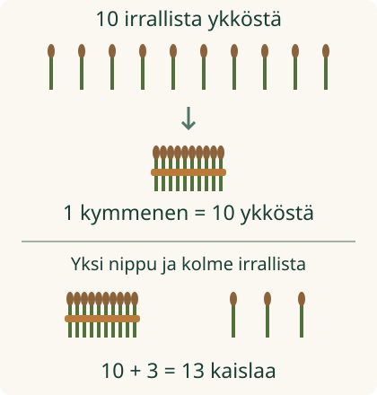

<link rel="stylesheet" href="lesson.css">
<section class="ten-lesson">

<section data-teaching-step="1-frame1" data-lesson-role="teaching-step"><div class="lesson-intro"><h2>Kymmenestä tulee kymppinippu</h2></div>
<p>Aava sitoo kaisloja talteen. Yhteen kymppinippuun kuuluu aina <strong>kymmenen</strong> kaislaa.</p><p><strong>Teen kymmenestä ykkösestä yhden kymppinipun.</strong></p></section>
<section data-teaching-step="1-frame2" data-lesson-role="teaching-step"><h3>Samat kymmenen yhdessä</h3><p>Ota kymmenen tikkua. Sido ne yhteen. Tikkuja ei kadonnut: niitä on yhä kymmenen.</p>
<figure data-lesson-role="worked-example"></figure>
<p><strong>Yksi nippu, kymmenen kaislaa.</strong> Kymmenen ykköstä voidaan laskea yhtenä kymmenenä.</p></section>


<section data-teaching-step="2" data-lesson-role="teaching-step">
<h3>Side ei muuta määrää</h3><p>Jos sidot vain yhdeksän, se ei ole kymppinippu. Yksi puuttuu. Jos mukana on yksitoista, yksi on liikaa.</p>
</section>


<section data-teaching-step="3" data-lesson-role="teaching-step">
<section data-lesson-role="question"><h3>Mieti</h3><p>Tuleeko kymmenestä vain yksi kaisla?</p><details data-lesson-role="answer"><summary>Paljasta ajatus</summary><p>Ei. Nippuja on yksi. Sen sisällä on edelleen kymmenen kaislaa.</p></details></section>
</section>


<section data-teaching-step="4" data-lesson-role="teaching-step">
<h3>Yksi nippu ja kolme irti</h3><p>Kaisloja on kolmetoista. Kymmenen menee nippuun ja kolme jää irralleen. Yhtään ei poistettu.</p>
</section>


<section data-teaching-step="5" data-lesson-role="teaching-step">
<section data-make-ten aria-label="Kerää kymmenen ykköstä" data-audience-columns><div data-visual-column><h3>Tee oma kymppiryhmä</h3>
<p data-situation>Tee kolmestatoista kaislasta yksi kymmenen ryhmä. Kaikkea ei tarvitse ottaa mukaan.</p>
<label>Tilanne<select data-case disabled><option value="ten">10 kaislaa</option><option value="thirteen" selected>13 kaislaa</option><option value="seventeen">17 kaislaa</option><option value="beads">13 helmeä</option></select></label>
<p>Ota kuvaa painamalla yksi mukaan. Painamalla uudelleen palautat sen. Sido, kun mukana on kymmenen.</p>
<h3>Irrallaan</h3>
<div class="ten-pieces" data-loose role="group" aria-label="Irralliset ykköset"></div>
</div><div data-response-column><div data-group-box data-tied="false"><h3>Ryhmään kerätyt</h3><p data-band hidden><strong>1 kymmenen = 10 ykköstä</strong></p><div class="ten-pieces" data-picked role="group" aria-label="Ryhmään valitut ykköset"></div></div><button type="button" data-tie disabled>Sido kymppi</button>
<button type="button" data-clear disabled>Palauta kaikki</button>
<output data-feedback data-verdict="neutral" aria-live="polite">Voit tehdä saman tikkujen ja siteen avulla.</output>
<details data-lesson-role="hint"><summary>Apua määrän katsomiseen</summary><label class="ten-inline"><input type="checkbox" data-show-amount disabled>Näytä mukana olevien määrä</label><p data-amount hidden></p><p>Kymmenkehys muodostuu kahdesta viiden rivistä. Sido vain kymmenen. Side ei lisää eikä poista yhtään.</p></details></div></section>
</section>


<section data-teaching-step="6" data-lesson-role="teaching-step">
<h3>Sama idea helmillä</h3><p>Kymmenen helmeä voi laittaa samaan pussiin. Pusseja on yksi, helmiä kymmenen. Kymppiryhmässä voi olla muitakin esineitä kuin kaisloja.</p>
</section>


<section data-teaching-step="7" data-lesson-role="teaching-step">
<details data-lesson-role="teaching-step"><summary>Tutki lisää</summary><p>Ota kaksikymmentä tikkua. Voitko tehdä kaksi kymppinippua? Avaa niput ja katso, ovatko kaikki tikut yhä mukana.</p></details>
</section>

<details class="teacher" data-lesson-role="teacher-note"><summary>Opettajalle ja ilman näyttöä</summary><p>Kanoninen tavoite on 1–2-luokkien käsitteellinen yksiköinti: kymmenen ykköstä yhtenä kymmenenä. Vaadittu M-NUM-02 koskee kardinaalista lukumäärää. M-NUM-18:n hajotelmat ovat vahva tuki; kaikkien kymppiparien hallintaa ei lisätä pakolliseksi. Moninumeroisen luvun numeropaikkojen lukeminen on seuraava aihe. Tarvittaessa aikuinen lukee 13:n tai 17:n; tehtävä on ryhmittely, ei esineiden nimeämistä.</p><p>Offline: anna tikkuja ja kumilenkkejä. Näytä myös yhdeksän ja yhdentoista tikun niput. Oppilas voi korjata niitä lisäämällä tai palauttamalla yhden. Vertailkaa yhden nipun ja sen kymmenen jäsenen eri laskuyksiköitä. Kumilenkin laittaminen ei itsessään tee kymmentä.</p><p>Mikä tahansa kymmenen eri kuvayksilöä kelpaa. Sama yksilö ei voi olla nipussa ja irti yhtä aikaa. Ryhmän jäsenen muuttaminen poistaa vanhan palautteen, määrän tukinäytön avaaminen säilyttää sen. Numeronäyttö on apua; tästä ei tehdä itsenäisen laskemisen tai fyysisen sitomisen päätelmää. Ei pisteitä, tallennusta tai oppijahistoriaa. Ilman JavaScriptiä staattinen kuva ja paperiohje säilyvät.</p></details>

<section data-teaching-step="8" data-lesson-role="teaching-step">
<section data-lesson-role="question"><h2>Lopuksi</h2><p>Näytä yksi kymmenen. Missä sen kymmenen ykköstä ovat?</p><details data-lesson-role="answer"><summary>Paljasta ratkaisu</summary><p>Ne ovat kaikki saman nipun tai ryhmän sisällä.</p></details></section>
</section>

</section>
